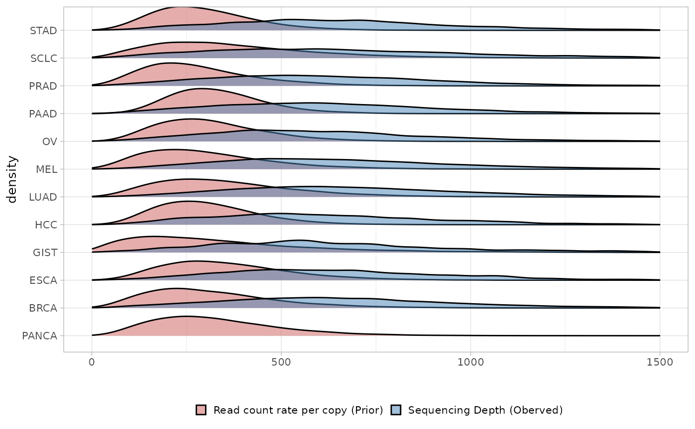

Visualise the prior distribution over the rate of reads per chromosome copy.
Source:R/plot_eta_prior.R
plot_eta_prior.RdVisualise the prior distribution over the rate of reads per chromosome copy.
Examples
# Load the default prior on eta, estimated from the MKS-MET data and the data.
data(MSK_genomic_data)
data(MSK_clinical_data)
data(priors_eta)
x = init(genomic_data = MSK_genomic_data, clinical_data =MSK_clinical_data)
#> ── INCOMMON - Inference of copy number and mutation multiplicity in oncology ───
#>
#> ── Genomic data ──
#>
#> ✔ Found 25659 samples, with 224939 mutations in 491 genes
#> ! No read counts found for 1393 mutations in 1393 samples
#> ! Gene name not provided for 1393 mutations
#> ! 201 genes could not be assigned a role (TSG or oncogene)
#>
#> ── Clinical data ──
#>
#> ℹ Provided clinical features:
#>
#> ✔ sample (required for classification)
#> ✔ purity (required for classification)
#> ✔ tumor_type
#> ✔ OS_MONTHS
#> ✔ OS_STATUS
#> ✔ SAMPLE_TYPE
#> ✔ MET_COUNT
#> ✔ METASTATIC_SITE
#> ✔ MET_SITE_COUNT
#> ✔ PRIMARY_SITE
#> ✔ SUBTYPE_ABBREVIATION
#> ✔ GENE_PANEL
#> ✔ SEX
#> ✔ TMB_NONSYNONYMOUS
#> ✔ FGA
#> ✔ AGE_AT_SEQUENCING
#> ✔ RACE
#>
#> ✔ Found 25257 matching samples
#> ✖ Found 513 unmatched samples
# Plot classification results for a specific sample
plot_eta_prior(x = x, priors_eta = priors_eta)
#> Warning: Unknown or uninitialised column: `cohort`.
#> Warning: Unknown or uninitialised column: `cohort`.
#> Warning: Unknown or uninitialised column: `cohort`.
#> Warning: Unknown or uninitialised column: `cohort`.
#> Warning: Unknown or uninitialised column: `cohort`.
#> Warning: Unknown or uninitialised column: `cohort`.
#> Warning: Unknown or uninitialised column: `cohort`.
#> Warning: Unknown or uninitialised column: `cohort`.
#> Warning: Unknown or uninitialised column: `cohort`.
#> Warning: Unknown or uninitialised column: `cohort`.
#> Warning: Unknown or uninitialised column: `cohort`.
#> Warning: Unknown or uninitialised column: `cohort`.
#> Picking joint bandwidth of 35.4
#> Warning: Removed 2362 rows containing non-finite outside the scale range
#> (`stat_density_ridges()`).
